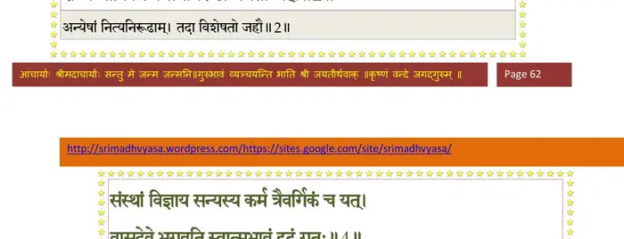
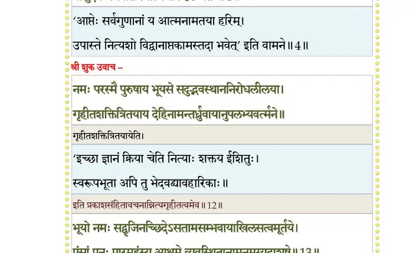
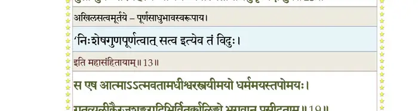
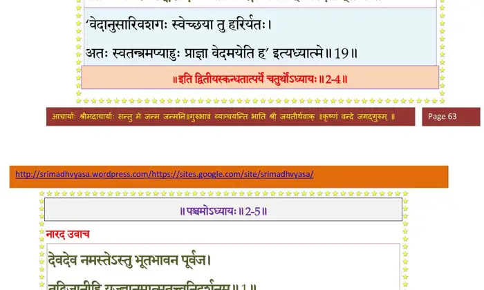

स्कन्ध 2 · अध्याय 4
श्लोक १
वैयासकेरिति वचस्तत्वनिश्चयमात्मनः ।
उपधार्य मतिं कृष्णे औत्तरेयः सतीं व्यधात्।। १ ।।
उपधार्य मतिं कृष्णे औत्तरेयः सतीं व्यधात्।। १ ।।
श्लोक २
आत्मजायासुतागारपशुद्रविणबन्धुषु ।
राज्ये चाविकले नित्यनिरूढां ममतां जहौ।। २ ।।
राज्ये चाविकले नित्यनिरूढां ममतां जहौ।। २ ।।
भागवततात्पर्यनिर्णय

श्लोक ३
पप््राच्छ चेममेवार्थं यन्मां पृच्छथ सत्तमाः ।
कृष्णानुभावश्रवणे श्रद्दधानो महायशाः।। ३ ।।
कृष्णानुभावश्रवणे श्रद्दधानो महायशाः।। ३ ।।
श्लोक ४
संस्थां विज्ञाय सन्यस्य कर्म त्रैवर्गिकञ्च यत् ।
वासुदेवे भगवति स्वात्मभावं दृढं गतः।। ४ ।।
वासुदेवे भगवति स्वात्मभावं दृढं गतः।। ४ ।।
भागवततात्पर्यनिर्णय

श्लोक ५
राजोवाच–
समीचीनं वचो ब्रह्मन् सर्वज्ञस्य तवानघ ।
तमो विशीर्यते मह्यं हरेः कथयतः कथाः।। ५ ।।
समीचीनं वचो ब्रह्मन् सर्वज्ञस्य तवानघ ।
तमो विशीर्यते मह्यं हरेः कथयतः कथाः।। ५ ।।
श्लोक ६
भूय एव विवित्सामि भगवानात्ममायया ।
यथेदं सृजते विश्वं दुर्विभाव्यमधीश्वरैः ।
यथा गोपायति विभुः यथा संयच्छते पुनः।। ६ ।।
यथेदं सृजते विश्वं दुर्विभाव्यमधीश्वरैः ।
यथा गोपायति विभुः यथा संयच्छते पुनः।। ६ ।।
श्लोक ७
यां यां शक्तिमुपाश्रित्य पुरुशक्तिः परः पुमान् ।
आत्मानं क्रीडयन् क्रीडन् करोति विकरोति च।। ७ ।।
आत्मानं क्रीडयन् क्रीडन् करोति विकरोति च।। ७ ।।
श्लोक ८
नूनं भगवतो ब्रह्मन् हरेरद्भुतकर्मणः ।
दुर्विभाव्यमिवाभाति कविभिश्च विचेष्टितम्।। ८ ।।
दुर्विभाव्यमिवाभाति कविभिश्च विचेष्टितम्।। ८ ।।
श्लोक ९
यथा गुणांस्तु प््राकृतेर्युगपत्क्रमशोऽपि वा ।
बिभर्ति भूरिशस्त्वेकः कुर्वन् कर्माणि जन्मभिः।। ९ ।।
बिभर्ति भूरिशस्त्वेकः कुर्वन् कर्माणि जन्मभिः।। ९ ।।
श्लोक १०
विचिकित्सितमेतन्मे ब्रवीतु भगवान्यथा ।
शब्दब्रह्मणि निष्णातः परस्मिंश्च भवान् खलु।। १० ।।
शब्दब्रह्मणि निष्णातः परस्मिंश्च भवान् खलु।। १० ।।
श्लोक ११
सूत उवाच–
इत्युपामन्त्रितो राज्ञा गुणानुकथने विभोः ।
हृषीकेशमनुस्मृत्य प््रातिवक्तुं प््राचक्रमे।। ११ ।।
इत्युपामन्त्रितो राज्ञा गुणानुकथने विभोः ।
हृषीकेशमनुस्मृत्य प््रातिवक्तुं प््राचक्रमे।। ११ ।।
श्लोक १२
श्रीशुक उवाच–
नमः परस्मै पुरुषाय भूयसे सदुद्भवस्थाननिरोधलीलया ।
गृहीतशक्तित्रितयाय देहिनामन्तर्ध्रुवायानुपलभ्यवर्त्मने।। १२ ।।
नमः परस्मै पुरुषाय भूयसे सदुद्भवस्थाननिरोधलीलया ।
गृहीतशक्तित्रितयाय देहिनामन्तर्ध्रुवायानुपलभ्यवर्त्मने।। १२ ।।
श्लोक १३
भूयो नमः सद्वृजिनच्छिदेऽसतामसम्भवायाखिलसत्वमूर्तये ।
पुंसां पुनः पारमहंस्य आश्रमे व्यवस्थितानामनुमृग्यदाशुषे।। १३ ।।
पुंसां पुनः पारमहंस्य आश्रमे व्यवस्थितानामनुमृग्यदाशुषे।। १३ ।।
भागवततात्पर्यनिर्णय

श्लोक १४
नमो नमस्तेस्त्वृषभाय सात्वतां विदूरकाष्ठाय मुहुः कुयोगिनाम् ।
निरस्तसाम्यातिशयेन राधसा स्वधामनि ब्रह्मणि रंस्यते नमः।।१४।।
निरस्तसाम्यातिशयेन राधसा स्वधामनि ब्रह्मणि रंस्यते नमः।।१४।।
श्लोक १६
यत्कीर्तनं यच्छ्रवणं यदीक्षणं यद्वन्दनं यत्स्मरणं यदर्हणम् ।
लोकस्य सद्यो विधुनोति कल्मषं तस्मै सुभद्रश्रवसे नमो नमः।।१५
विचक्षणा यच्चरणोपसादनात्सङ्गं व्युदस्योभयतोऽन्तरात्मनः ।
विन्दन्ति हि ब्रह्मगतिं गतक्लमास्तस्मै सुभद्रश्रवसे नमो नमः।।१६।।
लोकस्य सद्यो विधुनोति कल्मषं तस्मै सुभद्रश्रवसे नमो नमः।।१५
विचक्षणा यच्चरणोपसादनात्सङ्गं व्युदस्योभयतोऽन्तरात्मनः ।
विन्दन्ति हि ब्रह्मगतिं गतक्लमास्तस्मै सुभद्रश्रवसे नमो नमः।।१६।।
श्लोक १९
तपस्विनो दानपरा यशस्विनो मनस्विनो मन्त्रविदः सुमङ्गलाः ।
क्षेमं न विन्दन्ति विना यदर्पणं तस्मै सुभद्रश्रवसे नमो नमः।।१७
किरातहूणान्ध्रपुलिन्दपुल्कसा आभीरकङ्का यवनाश्शकादयः ।
येऽन्ये च पापा यदपाश्रयाश्रयाच्छुध्यन्ति तस्मै प््राभविष्णवे नमः।।
स एष आत्मात्मवतामधीश्वरस्त्रयीमयो धर्ममयस्तपोमयः ।
गतव्यलीकैरजशङ्करादिभिर्वितर्क्यलिङ्गो भगवान् प््रासीदताम्।। १९ ।।
क्षेमं न विन्दन्ति विना यदर्पणं तस्मै सुभद्रश्रवसे नमो नमः।।१७
किरातहूणान्ध्रपुलिन्दपुल्कसा आभीरकङ्का यवनाश्शकादयः ।
येऽन्ये च पापा यदपाश्रयाश्रयाच्छुध्यन्ति तस्मै प््राभविष्णवे नमः।।
स एष आत्मात्मवतामधीश्वरस्त्रयीमयो धर्ममयस्तपोमयः ।
गतव्यलीकैरजशङ्करादिभिर्वितर्क्यलिङ्गो भगवान् प््रासीदताम्।। १९ ।।
भागवततात्पर्यनिर्णय

श्लोक २०
श्रियःपतिर्यज्ञपतिः प््राजापतिर्धियां पतिर्लोकपतिर्धरापतिः ।
पतिर्गतिश्चान्धकवृष्णिसात्वतां प््रासीदतां मे भगवान्सतां पतिः।।२०।।
पतिर्गतिश्चान्धकवृष्णिसात्वतां प््रासीदतां मे भगवान्सतां पतिः।।२०।।
श्लोक २४
यदङ्घ्र्यभिध्यानसमाधिधौतया धियाऽनुपश्यन्ति हि तत्वमात्मनः ।
वदन्ति चैतत्कवयो यथारुचि स मे मुकुन्दो भगवान् प््रासीदताम् ।।
प््राचोदिता येन पुरा सरस्वती वितन्वताऽजस्य सतीं स्थितिं हृदि ।
स्वलक्षणा प््र•दुरभूत्किलास्यतः स मे ऋषीणामृषभः प््रासीदताम् ।।
भूतैर्महद्भिर्य इमाः पुरो विभुर्निर्माय शेते यदमूषु पूरुषः ।
भुङ्क्ते गुणान् षोडश षोडशात्मकः सोऽलङ्कृषीष्ट भगवान् वचांसि मे।।
नमस्तस्मै भगवते वासुदेवाय वेधसे ।
पपुर्ज्ञानमयं सौम्याः यन्मुखाम्बुरुहासवम्।। २४ ।।
वदन्ति चैतत्कवयो यथारुचि स मे मुकुन्दो भगवान् प््रासीदताम् ।।
प््राचोदिता येन पुरा सरस्वती वितन्वताऽजस्य सतीं स्थितिं हृदि ।
स्वलक्षणा प््र•दुरभूत्किलास्यतः स मे ऋषीणामृषभः प््रासीदताम् ।।
भूतैर्महद्भिर्य इमाः पुरो विभुर्निर्माय शेते यदमूषु पूरुषः ।
भुङ्क्ते गुणान् षोडश षोडशात्मकः सोऽलङ्कृषीष्ट भगवान् वचांसि मे।।
नमस्तस्मै भगवते वासुदेवाय वेधसे ।
पपुर्ज्ञानमयं सौम्याः यन्मुखाम्बुरुहासवम्।। २४ ।।
श्लोक २५
एतदेवात्मभू राजन्नारदायेति पृच्छते ।
वेदगर्भोऽभ्यधात्साक्षात् यदाह हरिरात्मनः।। २५ ।।
वेदगर्भोऽभ्यधात्साक्षात् यदाह हरिरात्मनः।। २५ ।।
।। इति श्रीमद्भागवते द्वितीयस्कन्धे चतुर्थोऽध्यायः ।।